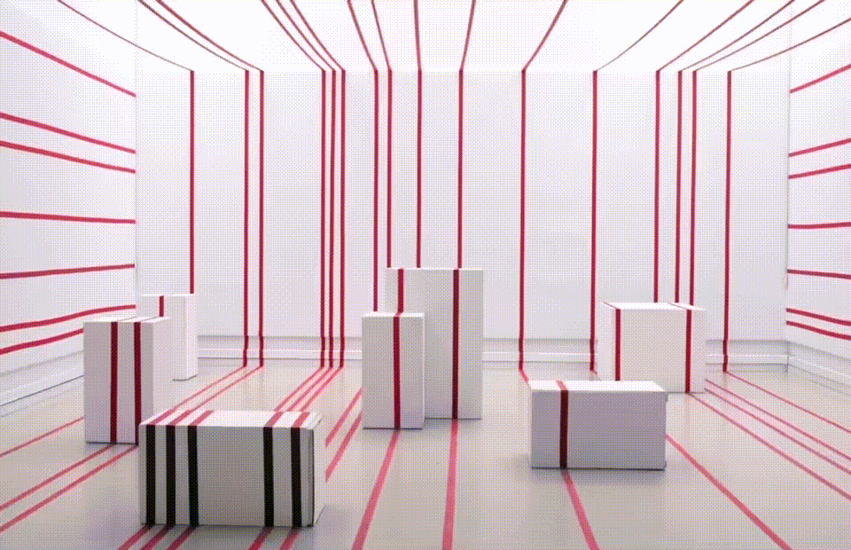

tape tape tape tape tape
I developed this site-specific installation with a team of two architecture students and a sociology student for the 2019 Rice Architecture Archi- Arts Charette. We were tasked with creating an interactive installation that responded both to the event's theme, Circus, and a musical composition written by a student at the Shepherd School of Music titled "Debussy Palimpsest." The composition is a palimpsest — a piece that alters and writes over an existing form, bearing traces of the original. Our installation is a layered palimpsest. We layered tape over the site and the objects in it in a pattern that both referenced the tempo of the piece, as well as a circus tent's stripes. We then invited Rice Dance Theater to choreograph and perform a dance that disrupts the pattern by moving the podiums, thus overwriting the original form and creating something new in the process, as a palimpsest does. Our team won first prize and received a grant to install and removed our piece over the course of three days to coincide with the annual Archi-Arts Gala.